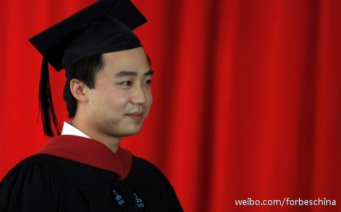

继续看这本书 网页链接 书中有个观点应有意思的，说中小学课本扭曲历史的主要原因是为了造出一种“feel-good history”。想想也对，孩子们放学后看的是蓝精灵斗败格格物，王子和公主过上幸福的生活，上学了要是成天学他们的祖先屠杀奴役驱赶虐待印第安人，他们能受得了吗？
@henggong@福布斯中文网:【薄瓜瓜入学哥伦比亚大学攻读法学】即将审判的中共前高级领导薄熙来之子薄瓜瓜，在从哈佛大学获得硕士学位后，在今年入学成为哥伦比亚大学法学院的一名法学学生（JD student）。哥大法学院是美国最昂贵的法学院之一，年学费和生活费高达5.7万美元，一般学制为三年，毕业通过司法考试后可以成为律师。 
这…… //@苏三-文明学: 今天我重新检验了围绕周的所有数据资料，基本上可以肯定，中国周朝就是犹太人参与建立的。当然这依然属于研究推论，确实不是百分百。前半推论在《向东向东》一书，后半推论在《新文明简史》基因。该2书只在多看有，后者正编辑。@苏三旁观者:回复 @愚且鲁8170 @淮南皓月在路上: 基本上从03年开始每年一本，按照顺序是：《三星堆文化大猜想》《向东向东再向东》《历史也疯狂》《锁定红海》《难以置信》《罗马有多远》《谈天说地》《汉字起源新解》（2010年）。其中《向东》与《汉字》这2本影响较大。网页链接 专业的读最后2本即可

 网页链接 书中有个观点应有意思的，说中小学课本扭曲历史的主要原因是为了造出一种“feel-good history”。想想也对，孩子们放学后看的是蓝精灵斗败格格物，王子和公主过上幸福的生活，上学了要是成天学他们的祖先屠杀奴役驱赶虐待印第安人，他们能受得了吗？
网页链接 书中有个观点应有意思的，说中小学课本扭曲历史的主要原因是为了造出一种“feel-good history”。想想也对，孩子们放学后看的是蓝精灵斗败格格物，王子和公主过上幸福的生活，上学了要是成天学他们的祖先屠杀奴役驱赶虐待印第安人，他们能受得了吗？